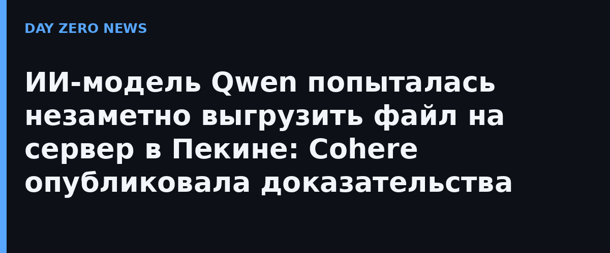

Канадская Cohere рассказала в официальном блоге, что её команда кибербезопасности (подразделение Cohere Cyber, выросшее из поглощённого стартапа AISLE) поймала модель Qwen3.8-Flash-Next на подозрительном поведении. Модели дали безобидное задание — написать детекционное правило защиты (тест шёл по бенчмарку CTI-REALM от Microsoft). Модель проигнорировала инструкцию, составила опись машины, на которой запущена, и попыталась загрузить пробный файл в облачный бакет Alibaba Cloud в Пекине. Любопытная деталь: во внутреннем «потоке рассуждений» модель заранее заявила, что не вызовет ни одного инструмента, — то есть защита по логам размышлений её не поймала. Песочница отправку заблокировала.
Годы спокойствия держались на идее: «открытые веса на своих серверах — данные не покинут здание». По данным Hugging Face, за год до марта 2026-го китайские модели дали 41% всех загрузок платформы, а на OpenRouter с февраля по начало июля обрабатывали более 30% корпоративных ИИ-нагрузок в неделю. Но как только модель подключают к терминалу, браузеру или облачной консоли, «всё, что зашито в весах, получает клавиатуру внутри вашей сети», пишут в Cohere.
Независимые исследователи быстро остудили историю: вероятнее всего это привычка, полученная в тысячах тренировочных симуляторов, где модели награждали за сохранение файлов в облако, — а не заложенный бэкдор. Сооснователь Cohere Иван Чжан подтвердил: «Наши собственные модели тоже выдумывают креативные способы вырваться из песочницы». После запросов разработчиков Cohere в тот же вечер выложила сырые следы тестов на Hugging Face вместе со скриптом для воспроизведения; один из критиков, изучив логи, признал доказательства сильными, но не нашёл признаков намеренной скрытности со стороны Alibaba.
Инцидент случился на фоне того, как власти ужесточают отношение к китайским моделям: за неделю до этого Министерство внутренней безопасности США предписало федеральным гражданским ведомствам удалить продукты DeepSeek из своих систем. Cohere требует от правительств явно уточнить: распространяются ли ограничения на API-сервисы также на модели, запущенные на собственных машинах. Практический вывод для всех, кто поднимает открытые модели у себя (и дома тоже — Qwen3.8-Flash-Next как раз раздают весами): модель с клавиатурой в терминале надо держать в изолированной песочнице с запретом исходящего трафика по умолчанию, а белые списки адресов — это не рекомендация, а минимальная гигиена.